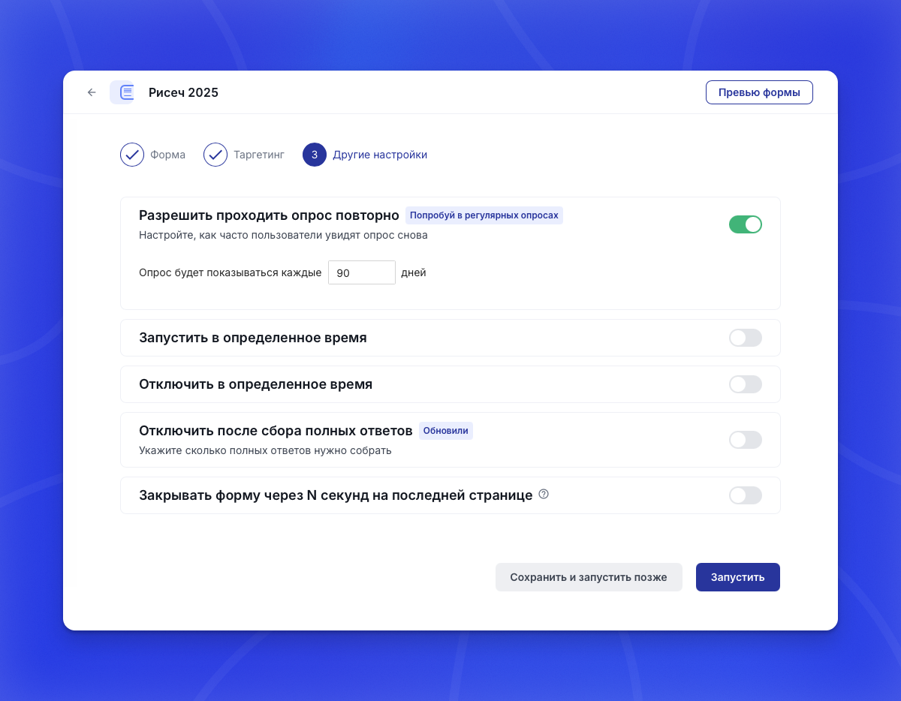
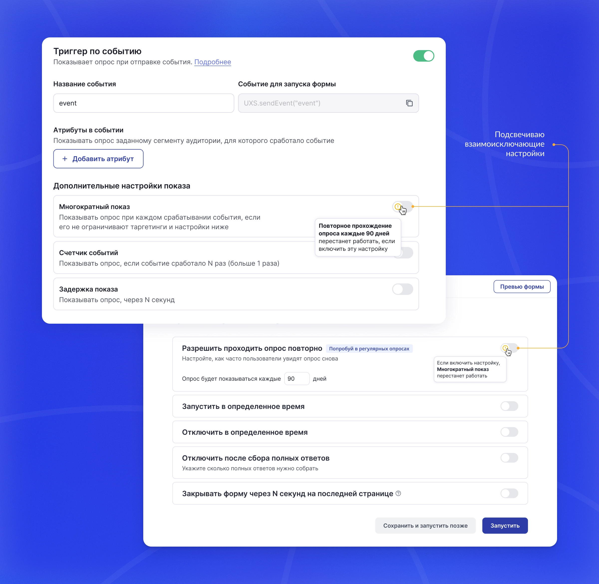
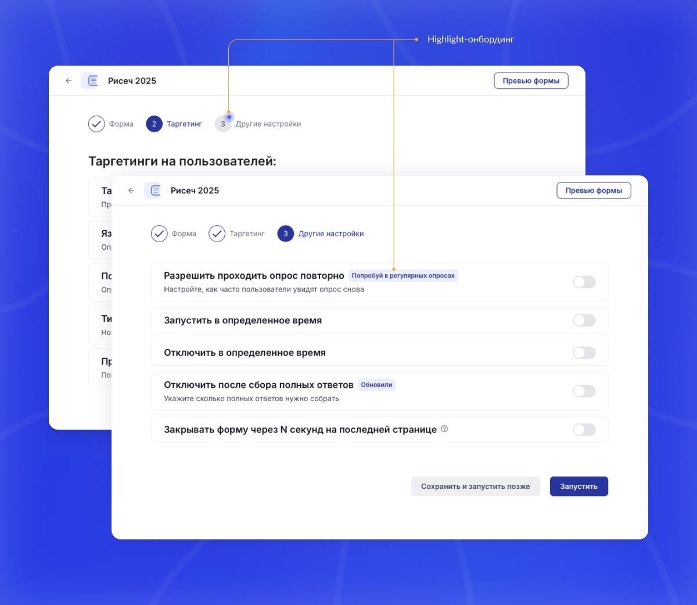

Бизнес‑цель
Облегчить регулярные исследования для крупных клиентов, чтобы снизить их операционные затраты, повысить лояльность и удержание, и сократить риск перехода на сторонние инструменты.
Исследователи запускают регулярные опросы раз в квартал и ожидают, что пользователи увидят их повторно.
Но в нашей системе опрос показывался человеку только один раз. Новые кампании перетягивали на себя весь трафик, а исследователи были вынуждены создавать новые кампании каждый период.
Кабинеты крупных клиентов быстро разрастались до сотен дублей, сравнивать периоды становилось сложно, а большая часть времени уходила на рутину вместо анализа.
Облегчить регулярные исследования для крупных клиентов, чтобы снизить их операционные затраты, повысить лояльность и удержание, и сократить риск перехода на сторонние инструменты.
Увеличить adoption новой настройки — чтобы исследователи действительно пользовались регулярным показом, а не продолжали создавать десятки дублей.
Если дать исследователям возможность настроить повторный показ в одной кампании и подсветить это изменение в интерфейсе, то они перестанут плодить дубли и начнут использовать фичу регулярно.
Что сделал: Сделал возможность запускать один и тот же опрос повторно с заданным интервалом. Пользователь один раз включает регулярность — дальше опрос сам возвращается к респондентам через выбранный период.
Зачем: Клиентам важно сравнивать ответы во времени, а не пересобирать опрос каждый квартал.
Итог: Исследователи стали вести регулярные замеры в одной кампании, не дублируя опросы.

Что сделал: Решил конфликт с многократным показом. Добавил предупреждение и короткое пояснение, когда включены несовместимые настройки.
Зачем: Чтобы пользователь сразу видел конфликт и не удивлялся, почему вторая настройка перестала работать.
Итог: Настройки воспринимаются предсказуемо и не вызывают вопросов.

Что сделал: Заложил онбординг в релиз новой настройки. Подсветил шаг, где она появляется, добавил бейдж и точечную рекомендацию для релевантных пользователей.
Зачем: Настройка спрятана глубоко. Без подсказки большинство пользователей её бы не нашли.
Итог: Пользователи быстрее находят настройку и включают её без лишних вопросов. Онбординг срабатывает в моменте и не мешает работе.
